| Nombre | Posición | Edad (2025) | Bibliografía | Portada |
|---|---|---|---|---|
| Henri Camara | Delantero | 48 | Delantero histórico de Senegal, participó en el Mundial 2002 siendo pieza clave en la histórica campaña de cuartos de final. |
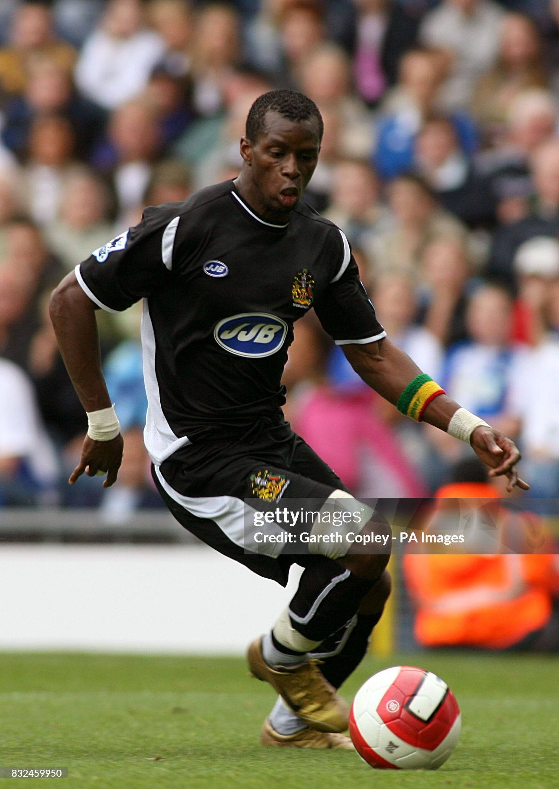 |
| Abdou Diallo | Defensa central | 29 | Defensor versátil, campeón de África 2021 con Senegal. Ha jugado en clubes de Europa y actualmente en Medio Oriente, destaca por su resistencia y salida de balón. |
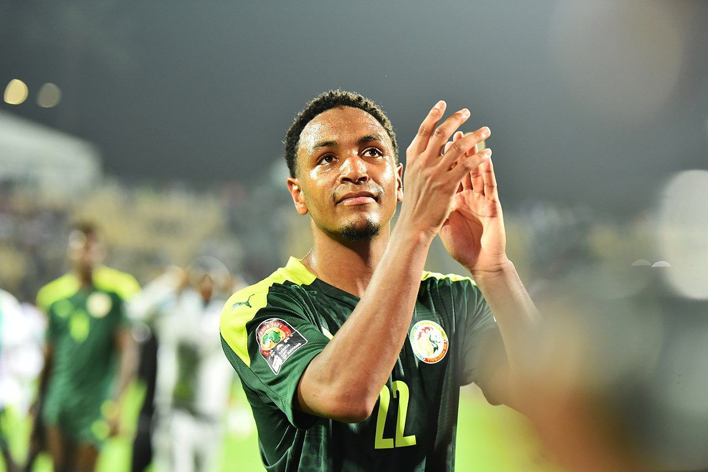 |
| Famara Diédhiou | Delantero | 32 | Delantero potente, internacional con Senegal. Reconocido por su capacidad aérea y fuerza física. |
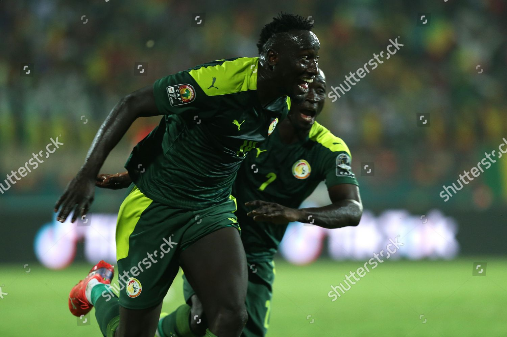 |
| Papa Bouba Diop | Mediocentro defensivo | 40 | Autor del gol histórico contra Francia en el Mundial 2002. Apodado “El Coloso de Colobane”. |
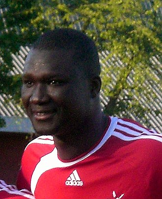 |
| El Hadji Diouf | Delantero | 44 | Estrella de Senegal en 2002, jugó en Liverpool y Bolton. Reconocido por su carisma y estilo eléctrico. |
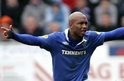 |
| Idrissa Gana Gueye | Mediocentro | 35 | Mediocampista incansable, actualmente en clubes europeos, especialista en recuperación y equilibrio en el mediocampo. |
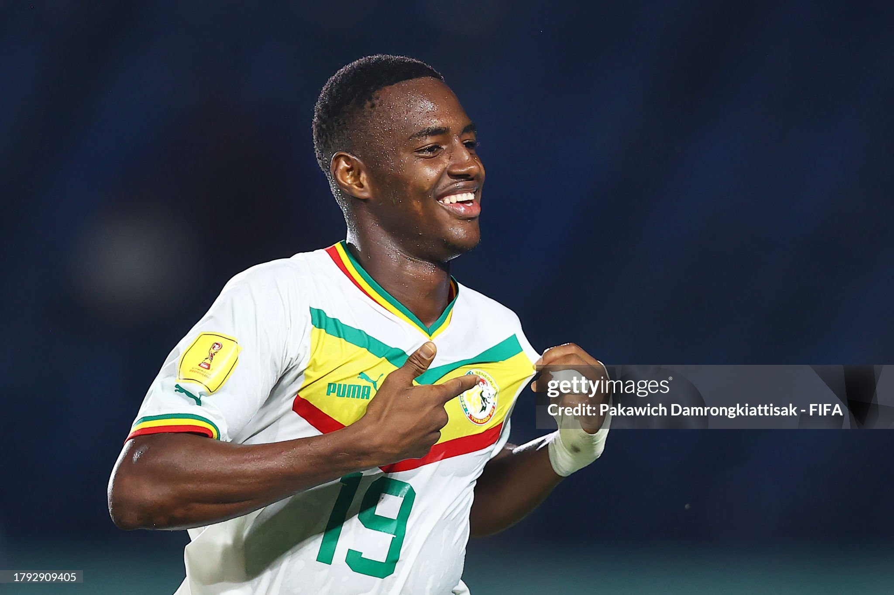 |
| Kalidou Koulibaly | Defensa central | 34 | Capitán de Senegal. Ha tenido carrera en Italia, Turquía y Medio Oriente. Potente, seguro en el juego aéreo y líder. |
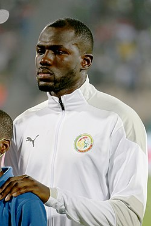 |
| Sadio Mané | Delantero | 33 | Una de las máximas figuras actuales senegalesas. Ha jugado en Liverpool, Bayern y participa activamente en la selección nacional y en torneos internacionales. |
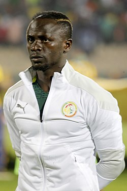 |
| Youssouf Sabaly | Lateral derecho | 30 | Defensa con buen recorrido por banda, con experiencia en clubes europeos. Contribuye tanto en defensa como en ataque. |
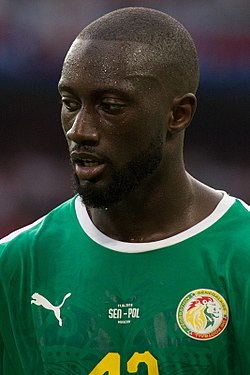 |
| Salif Sané | Defensa central | 35 | Defensor fuerte en el juego aéreo, con experiencia en liga alemana y otros torneos internacionales. Sigue siendo una opción fiable en defensa. |
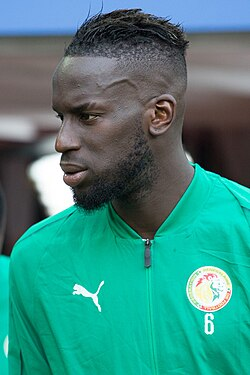 |
| Ismaïla Sarr | Extremo | 27 | Extremo potente, veloz y desequilibrante. Ha jugado en clubes ingleses y franceses, y es titular frecuente en selección. |
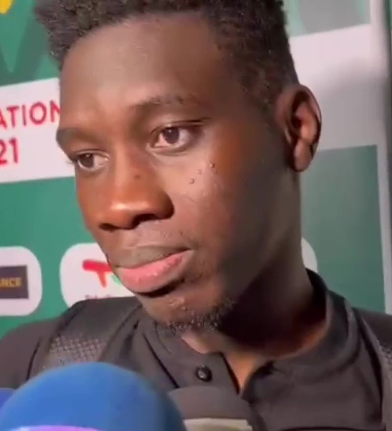 |
| Édouard Mendy | Portero | 33 | Portero competitivo que ganó la Champions con Chelsea. Actualmente juega en Arabia Saudita. Figura clave de la selección y ganador de la Copa África 2021. |
 |